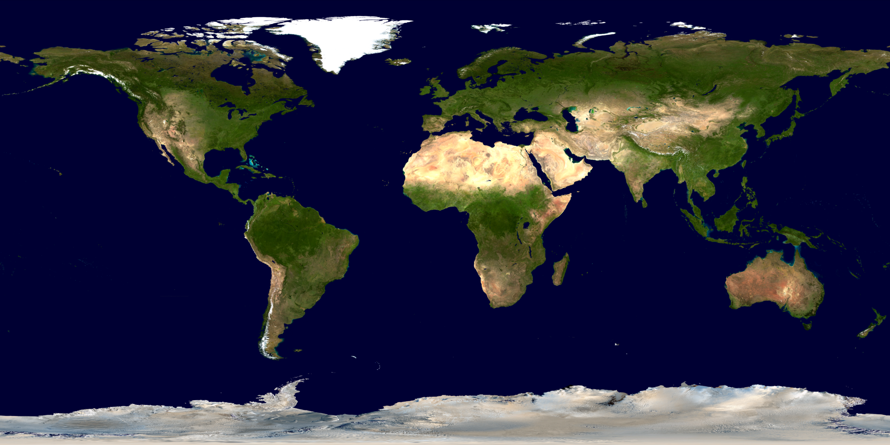

2025
How lexical frequency, language dominance and noise affect listening effort – insights from pupillometry
Schmidtke, J., Bsharat‑Maalouf, D., Degani, T., & Karawani, H. Language, Cognition and Neuroscience (online first), 1–14.
I am interested in teaching and learning foreign languages. On the learning side, I study language processing, listening effort, and bilingualism using behavioral methods and pupillometry. On the teaching side, I have worked on curriculum development for German for specific purposes. Lately, I have thought of ways to combine my interest in computational data processing and teaching language skills. Check out my projects page for more.
I am an Assessment Specialist at the Goethe-Institute (Munich) and a Research Collaborator at Leipzig University. My work focuses on speech perception in noise, bilingual listening effort, and pupillometry-based measures of language processing.
Bachelor’s Program, German as a Second Language — University of Leipzig.
Master’s Program in German and European Studies — University of Haifa.
Second Language Studies Program — Michigan State University.
Workshop given at the Goethe Institute
Schmidtke, J., Bsharat‑Maalouf, D., Degani, T., & Karawani, H. Language, Cognition and Neuroscience (online first), 1–14.
Bsharat‑Maalouf, D., Schmidtke, J., Degani, T., & Karawani, H. Ear and Hearing.
Schmidtke, J., & Tobin, S. In: Papesh, M. & Goldinger, S. (eds.), Modern Pupillometry. Springer.
Studies in Second Language Acquisition, 40(3), 529–549.
Journal of Speech Language and Hearing Research, 60(10), 2879–2890.
Frontiers in Psychology, 7(678).
Frontiers in Psychology, 5(137).
Godfroid, A. & Schmidtke, J. In: Bergsleithner, J. M., Frota, S., & Yoshioka, J. K. (eds.), Noticing: L2 studies and essays in honor of Richard Schmidt.
Loewen, S., Lavolette, B., Spino, L., Papi, M., Schmidtke, J., Sterling, S., & Wolf, D. TESOL Quarterly, 48, 360–388.
Anastas, J., Gindin, L., Kelty, E., Rimzhim, A., Zhao, J., Andrade, B., … Schmidtke, J., Tobin, S., Naigles, L. Journal of Child Language, 37(5), 1133–1140.
Places I have lived in the past

Feel free to connect